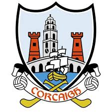
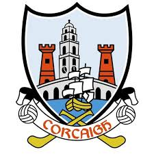

Cork is SUPERIOR to Dublin
About Page
The City
Q and A with a Cork inhabitant
Home
Heres a few reasons why.
1. Cork is a much cheaper city to live in than dublin, 27% cheaper actually. Dublin is even more expensive to live in than London.Ouch
2. Cork has English Market Dublin does not
3. Michael Collins was born in Cork noone was born in Dublin
4. Cork is the rebel county Dublin is not rebel
5. Cork Big!!! Dublin tiny
 
